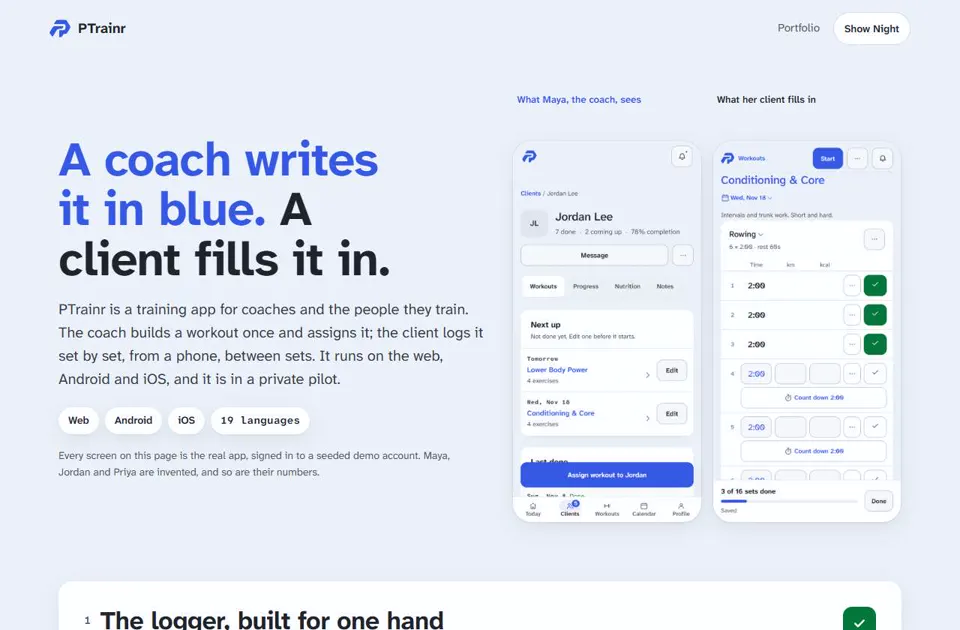
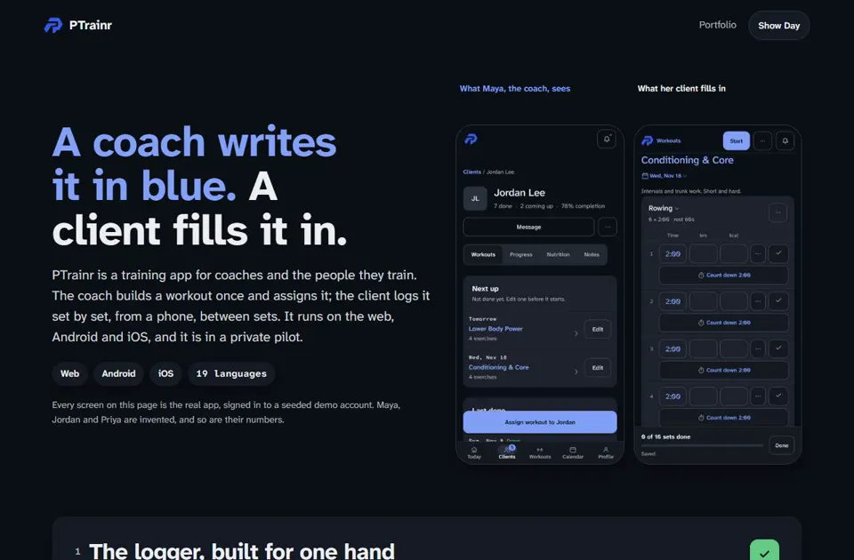
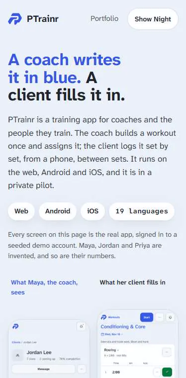
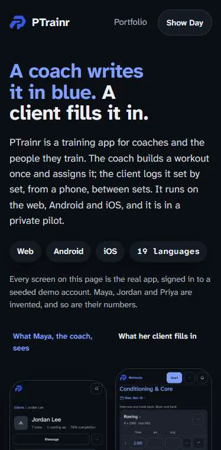
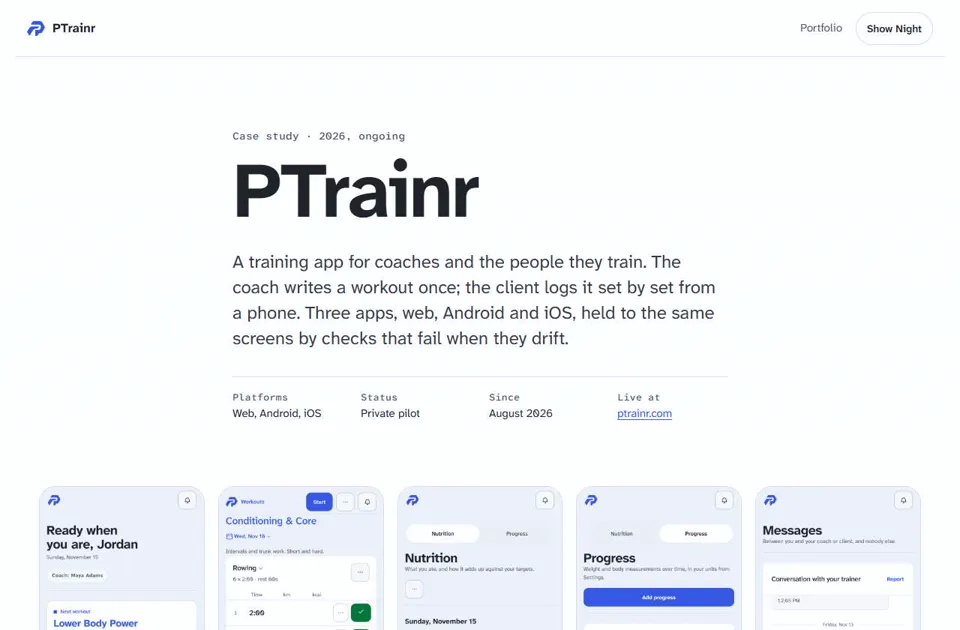
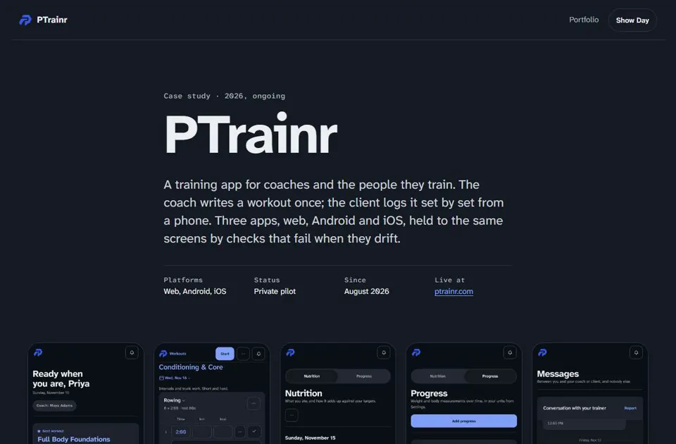
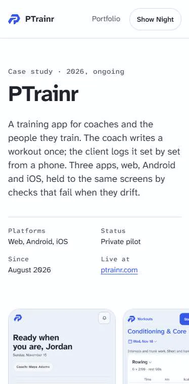
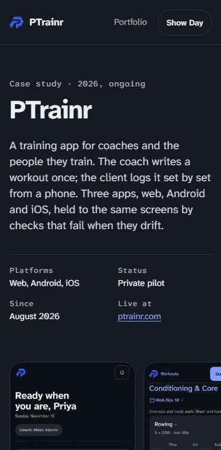
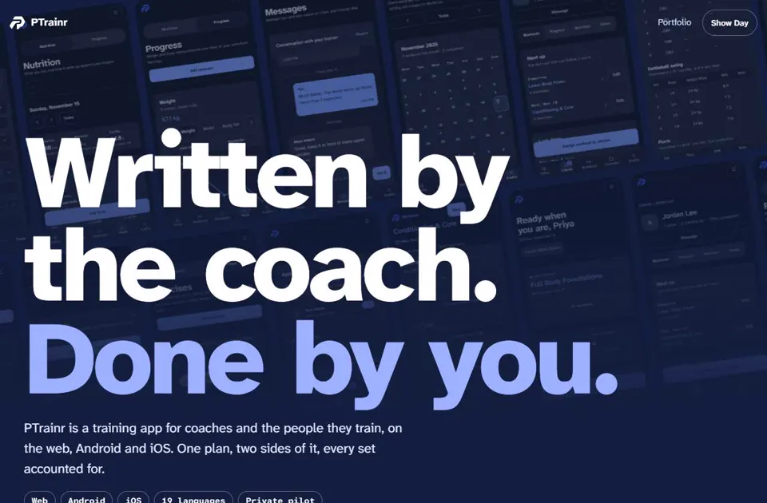
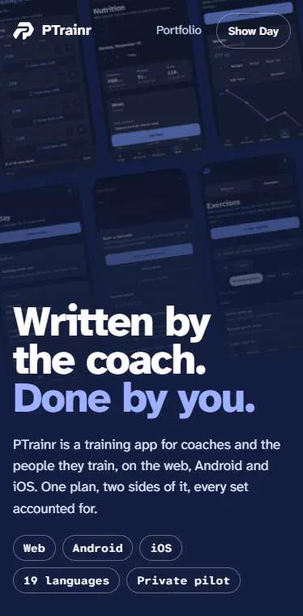

TC6IDM.github.io · /ptrainr/ · 15 November 2026
Each one is a working page with the real captures and real copy, in Day and Night, from a phone up to a desktop. Open them, try the Day and Night switch, then pick one or mix them. Nothing gets built until you do.




Why this one: it explains the product by behaving like it, it is the only one a visitor could not mistake for another app's page, and it is the lightest.





